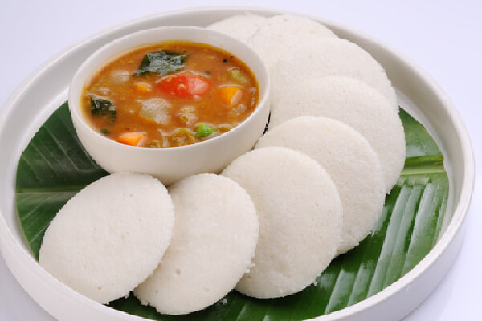

Idli

Ingredients
- 2 cups idli rice
- ¾ cup urad dal
- ¼ teaspoon fenugreek seeds
- 1½ teaspoons non-iodized salt
- Water
Equipment
- Wet grinder or high-powered blender
- Idli steamer or cooker
- Large bowl or pot for fermentation
Idli is not only Keralas but one of South India's most famous dish.
It is paired with sambar and coconut chutney for better taste.
Instructions
Day Before (Evening): Soaking
Rinse the idli rice thoroughly until the water runs clear — this removes excess starch that would make the idli gluey. Soak in plenty of cold water for 6-8 hours. In a separate bowl, rinse the urad dal and add the fenugreek seeds. Soak them together in cold water for 4-6 hours. The soaking times can overlap; both just need to be fully hydrated before grinding.Grinding
Drain the urad dal and fenugreek seeds. Grind them first, on their own, with a small amount of cold water until completely smooth and fluffy — this takes 15-20 minutes in a wet grinder, 3-5 minutes in a Vitamix. The batter should be very light and airy, almost whipped. When you drop a small amount in water, it should float. This is how you know you’ve ground it sufficiently.
Drain the rice and grind separately until it reaches a slightly coarse texture — think fine semolina, not completely smooth. The slight coarseness gives idli its characteristic texture. Combine both batters and mix with clean hands (not a spoon — your hands transfer natural wild yeast from your skin, which helps with fermentation). The combined batter should be thicker than pancake batter but pourable.Fermentation (8-14 Hours)
Cover the bowl with a cloth or loosely placed lid — not airtight, as CO₂ needs to escape. Leave in the warmest spot in your kitchen. In summer (28°C+), 8 hours is usually sufficient. In winter or a cooler kitchen, it might take 12-14 hours. Placing the bowl in your oven with just the oven light on typically creates a 30-35°C environment, ideal for idli fermentation.
The batter is ready when it has visibly risen (often doubling in volume), smells pleasantly sour, and has small bubbles on the surface. Between hours 10-12, you’ll see the most active bubbling. Use the float test: a spoonful of batter dropped in a glass of water should float. If it sinks, ferment 2-4 more hours.Steaming (Day Of)
Add salt to the fermented batter and gently fold it in — don’t stir vigorously, as you want to preserve the air bubbles. Grease idli molds lightly with oil. Fill each mold about ¾ full. Heat water in your steamer until producing vigorous steam. Place idli trays inside, close the lid tightly, and steam on medium-high for 10-12 minutes. Don’t open the lid during steaming. Insert a toothpick to test — it should come out clean when done. Let cool 2 minutes before removing with a wet spoon.
Home